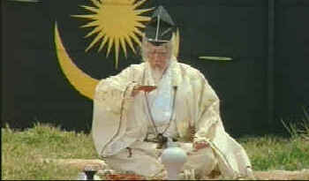
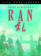

| Ran/A,C |
| Fox Lorber/1985/160/WS 1.70 |
|
The good news is a new widescreen release of Ran is coming from Winstar Cinema. Details have not yet been announced, but hopefully, struck from new film elements, it will be a definitive anamorphic widescreen release. |
Glorious. Mesmerizing. Colossal. Spectacular. Breathtaking. All these adjectives belong to any description of Akira Kurosawa's Ran, the culminating vision of a stellar career of making film art. The parallels between Ran and Kagemusha (Still awaiting a DVD release), filmed five years earlier, are numerous. Both share a bleak, fatalistic view of the forces of human nature. Heroic deeds are performed with no hope of altering the path of preordained fate. Each deals with the breakdown of feudal leadership coinciding with the death or dotage of a powerful and ruthless leader. With Ran, Kurosawa traces the path of Shakespeare's King Lear. Ran paints the greater individual character portraits.
|
 |
| Lord Hidetora confers with his leaders. ©Fox Lorber |
The performances in Ran are devastating. Tatsuya
Nakadai's shell of the great Lord Hidetora is one of the most
powerfully pathetic screen creations ever filmed. Hidetora's
past filled with evil deeds is miraculously reflected in the
glowing orbs of Nakadai. The elements lash out at the once great
lord, wrenching from him the accumulated guilt of a lifetime of
relentless ambition. Mieko Harada plays Lady Kaede with
insane determination. The loyal vassal Tango is given a sense of
honesty as portrayed by Masayuki Yui. Lord Kurogane is imbued
with integrity by Isashi Ikawa. Kurosawa distinguishes Ran with
masterly direction of his actors.
Kurosawa's use of color and screen composition is astounding in Ran.
Bright powerful splashes of color heighten and intensify
feelings. The widescreen is filled edge to edge by the
magnificent sense of space ordered in Kurosawa's universe.
The battle for youngest son Saburo's castle depicts the violence
and bloodshed in a montage of unforgettable images. Thousands of
extras stretch across the screen in colorful samurai armor,
defiled by blood and enveloped by the dust of pounding horses.
Surely no one has ever created a series of images near to
the perfection accomplished in Ran.
Ran on DVD is an improvement
over the laser disc transfer only because DVD offers better
resolution and greater color saturation. Far too may
scenes are soft, almost like the transfer was rolled off to mask
some of the straight edge jitter. Not a bad idea since there are
plenty of edge details that tend to twitter. The DVD aspect ratio
measures approximately 1.70, cropping off some of the theatrical
presentation 1.85 composition. Fortunately, Kurosawas impeccable
composition does not seem overly cramped. . The color is often
intense with satisfying saturation. The white subtitles appear in the bottom black
letterbox band and the picture portion is located near the top
of the 4 x 3 frame. Some dirt speckles are sprinkled throughout
the elements. The powerful score is cleanly presented in Dolby
2.0 Digital.
Ran is a film to be savored over and over again. The
virtues of compelling narrative and uncompromised visual
realization combine in the creation of a screen classic which
belongs in the collection of all film lovers.
For more about Ran read The Epic Images of Kurosawa.
 Want more details on the upcoming theatrical release of Ran. Click the poster image. |

The Movie Poster Archive include extensive poster images from the films of stars like Susan Hayward, Kirk Douglas, Katharine Hepburn and many more. This month's featured star is Spencer Tracy.

Click on
the DVD MIA symbol for profiles of DVDs missing in action.
Add films to the DVD
MIA Master List by
filling out a simple form. Click
Here

Check out these selections from our DVD Review Archive. New releases are constantly in our face, but catalog gems should not be forgotten.
 Kinoeye
Archive
Kinoeye
ArchiveThis is a resource of all content-rich materials on the web relating to Central and East European cinema. The ultimate aim of the Kinoeye Archive is to provide a near-as-damn-it definitive index of intelligent and thoughtful English-language analysis of Central and Eastern European cinema on the web.

Fine reviews, features and news on
DVD. The
Big Picture has been doing DVD as long as anyone.
Jeff McNeal and Bob Banka feed on a steady diet of DVDs.

A vast reservoir of DVD information, reviews, the kitchen sink. Check out their huge DVD database including reviews from many sites.

Cinemedia
is the largest film and media directory with over 25,000
links.